Gifd
Share GIFs with your friends on Twitter.
Share GIFs with your friends on Twitter.
Glad you asked. Sign in with Twitter. In our message field, write and tag your message with an emotion.
Currently we have these emotion tags available:
To tag an emotion, add % before it. Your tweet should look something like this:
I %love to tweet.
A list of gifs will appear below where you're writing your tweet. Swipe through, and tap the photo you want.
Hit 'Send' and enjoy. You've just shared a more meaningful moment.